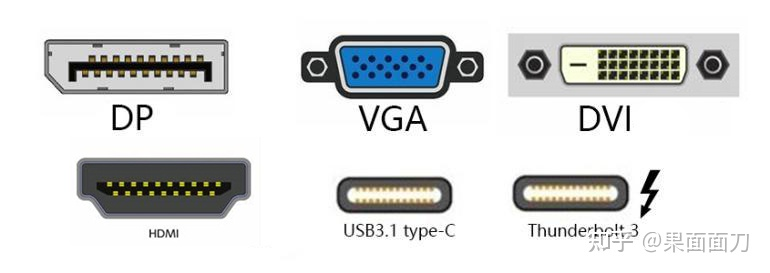
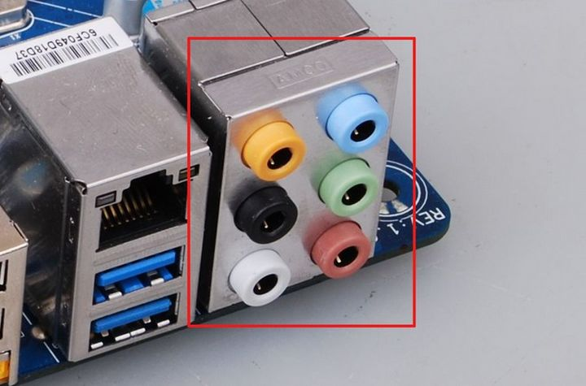

1.电脑的组成
1.1.cpu
CPU-(也叫做中心处理器)，电脑所有的信息都是通过CPU进行运算和处理的，所以相当于电脑的心脏。目前最常用的CPU芯片有inter和AMD两大品牌。
1.2.主板
主板-电脑中所有的部件都是通过主板连接起来的，主板给各个部件提供部分电源和连接通道，让所有的部件都能正常的连接工作
1.3.内存
内存-内存在电脑中充当着桥梁和高速通道的所用，所有的数据的计算收集、发送都要经过内存进行运输，所用空间越大的内存速度也就会越快。
1.4.显卡
显卡-显卡主要是把电脑处理的结果，画面通过显卡传输到显示器的设备，如果没有显卡的话，我们将无法看到显示器上的内容。显卡有独立显卡和集成显卡，独立显卡一定要查到主板上才可以使用的，集成显卡一般是集成在主板上，现在还集成在CPU上，也就是说如果主板集成了显卡或CPU集成了显卡，就可以不用独立显卡。
1.5.硬盘
硬盘-硬盘是电脑存放东西的仓库，电脑上的所有东西，比如程序，音乐，视频都是装在这个硬盘里面的，所有硬盘的容量一般很大，现在都是以T为单位的硬盘了。
1.6.电源
电源-这个就是给电脑提供电源的设备，电脑内部所有的部件都由电源供电。
1.7.其他
显示器、外设部件如键盘，鼠标，音箱，打印机
2.电脑的接口
2.1.外部
2.1.1.显示接口
目前经常看到的显示接口有：雷电3、Type-C、DP、HDMI、DVI、VGA六种
目前主流的是：雷电3和雷电4接口（用于高端显示器的显示），HDMI（大众级别高性能不落伍的接口），DP（比HDMI好点）
显示效果：
雷电3(40Gbps)>DP1.4(26Gbps)>HDMI2.0(18Gbps)> Type-C(10Gbps)>DVI>VGA
2.1.2.音频接口
2.1.2.1.笔记本电脑音频接口
笔记本电脑音频接口有两种：一种是耳机麦克风双孔接口，另一种是耳麦一体单孔接口。
2.1.2.1.台式电脑音频接口
台式主机背面在主板自带的声卡上，一般有6个不同颜色的音频接口，而不同颜色的接口有不同的功能：
粉：麦克风接口
蓝：音频输入接口（外接设备输入或录音使用）。
绿：音频输出接口（连接耳机或音响）
橙：中置/重低音喇叭接口，当使用六声道以上时需要用到。
黑：后环绕扬声器接口，当使用四个以上声道时需要使用。
灰：侧环绕扬声器接口，当使用8个以上声道时需要使用。
2.1.3.网络接口
RJ45 以太网接口：网络连接
2.1.4.电源接口
电源接口是电脑的必备接口，功能是给硬件供电、笔记本电池充电，游戏本在接上电源后可以发挥最高性能。
台式机一般都是品字三孔口。
笔记本的话有方形的充电口、有圆形的充电口，有磁吸的magesafe（苹果）、Type-c充电口，雷雳3/4也可用于充电。
2.1.5.数据传输接口
多功能读卡器接口/SDXC插槽（常见于mac电脑）
某些 Mac 电脑配备 SD（安全数字）或 SDXC（安全数字扩展容量）卡插槽，可让对 SD 介质（例如数码相机存储卡）进行数据读取和写入
在 USB 设备列表中，选择“内置存储卡阅读器”即可查看关于接口硬件和 SD 卡插槽内所插入介质的信息
USB接口
最常见的数据传输接口，常见的USB的U盘就是通过USB接口传输数据的。
雷电/雷雳接口
可以理解为USB-C的数据传输功能。